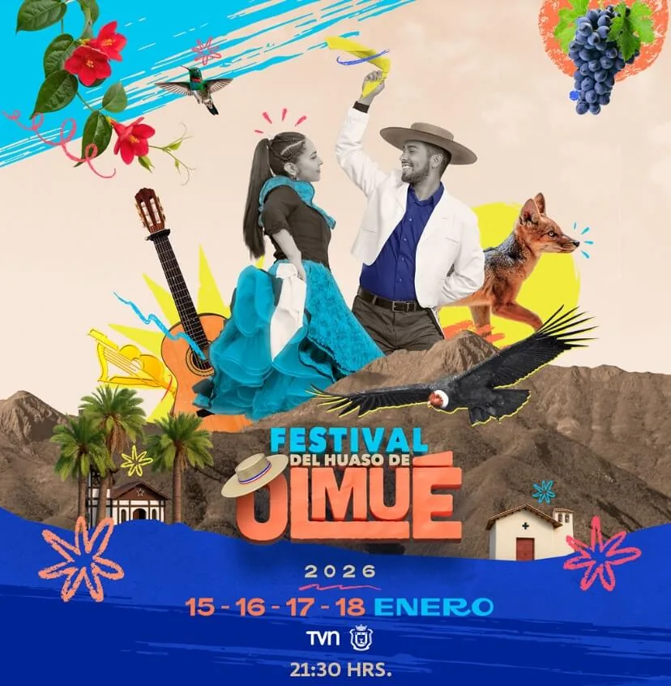
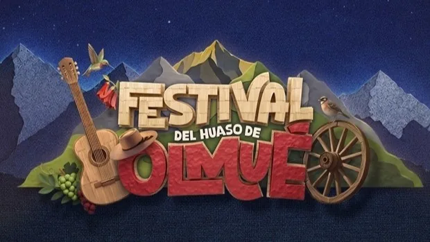

CULTURA Y TRADICIÓN
Festival del
Huaso de Olmué
Nuestra tierra, nuestra música, un encuentro de generaciones.
Una celebración del folclor y la cultura popular que reúne a la comunidad y a quienes nos visitan en el corazón de Olmué.

Noticias Relacionadas
¡Llega la tercera Expo Ecoferia Reserva de la Biósfera Olmué 2026!
Más información